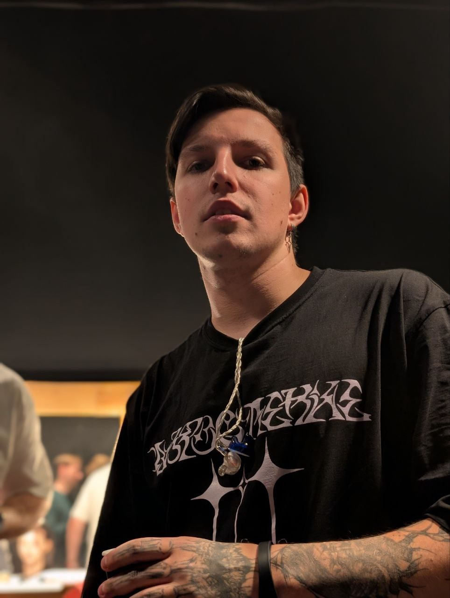
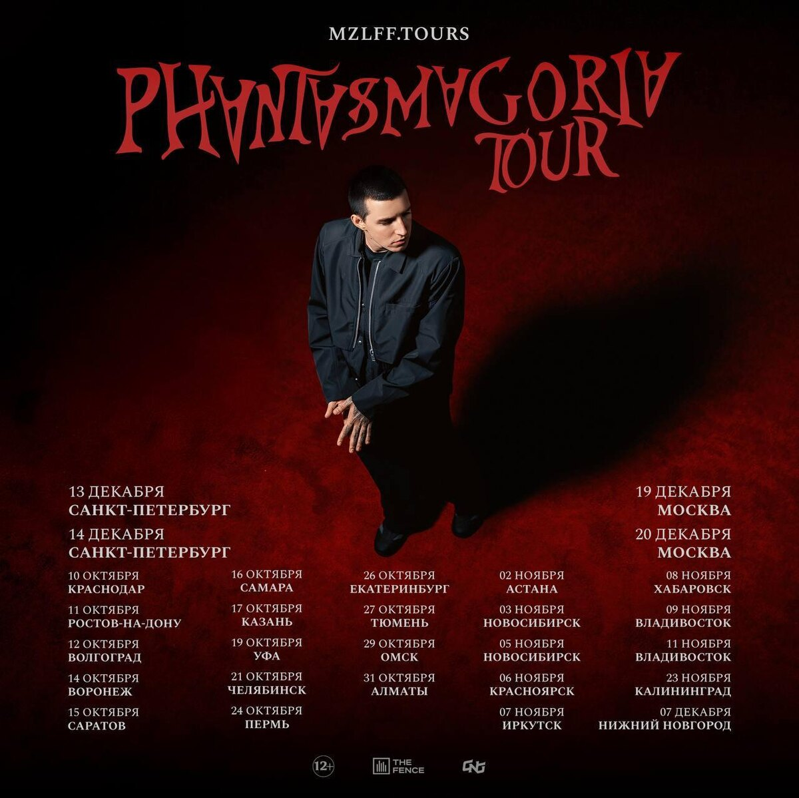

ПАРК
Карусели, зеркала и игрушки складываются в один непрерывный маршрут. Каждый следующий аттракцион выглядит всё менее безопасным.
ПАРК, ГДЕ МЕЧТЫ СТАНОВЯТСЯ КОШМАРАМИ
Сначала здесь праздник. Потом появляются зеркала, карусели, игрушки и ощущение, что аттракционы знают о тебе слишком много.
Девочка Нюта гуляет по парку аттракционов, где людей затягивает внутрь каруселей, оживают игрушки, а из кривых зеркал кто-то зовёт на помощь. Альбом выходит как цельная история на 8 треков.
Карусели, зеркала и игрушки складываются в один непрерывный маршрут. Каждый следующий аттракцион выглядит всё менее безопасным.
Через её путешествие сюжет показывает место, в котором детское любопытство соседствует со страхом и невозможностью просто уйти.
Парк можно читать как образ жизни, психики и взросления. Альбом не закрывает трактовку одним объяснением.
Знакомые лица за фасадом парка. Кадры — из официальных анимационных видео; описания по текстам песен и отзывам слушателей, это прочтение, а не официальный канон.
ВИЗУАЛЫ АЛЬБОМА: ЛЕГАВАЯ × SANYAUNIQ · КАДРЫ ИЗ ВИДЕО MZLFF
Слово «фантасмагория» пришло из XVIII века: так называли театральные шоу, где с помощью оптики и проекций показывали призраков и движущиеся образы. Точнее для этого парка название не придумать.
Выбирай остановку. Музыка, обложка и синхронизированный текст переключаются вместе.
Восемь глав, один маршрут. Выбери трек и нажми на строку текста, чтобы перейти к нужному моменту.
Вход в парк: праздничный фасад и первые признаки того, что за весельем скрывается нечто совсем другое.
Официальное видео MZLFF на YouTube. Если запуск не начался, нажми ▶ в видео.
Нажми на строку, чтобы перемотать
Загрузка текста…

MZLFF — музыкант, стример и баттл-рэпер. Его ранний путь связан с интернет-культурой, стримами и баттл-рэпом, а затем постепенно сместился к самостоятельным альбомам и масштабным концептуальным проектам.
PHANTASMAGORIA продолжает эту линию: музыка здесь работает вместе с визуалами, персонажами и концертной постановкой.

Осенью 2025 концертные площадки превращались в парк развлечений PHANTASMAGORIA. Тур соединял песни альбома с общей атмосферой его мира.
Здесь оставлен официальный постер как документ эпохи релиза, а не отдельная «галерея»: визуал встроен прямо в историю тура.
ОФИЦИАЛЬНЫЙ ТУР ↗Ссылки на материалы, использованные для фактической части сайта.